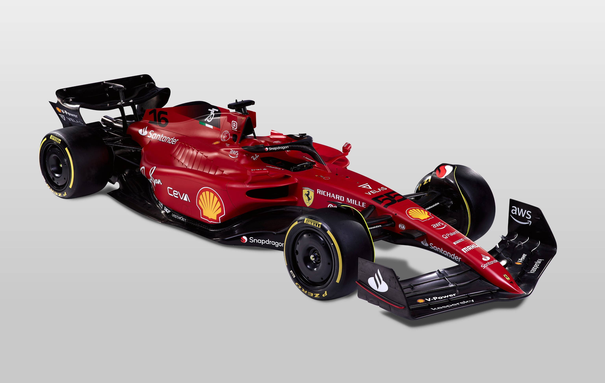

Balázs Hites
Summary
I am currently working as a process engineer. I would like to change carrier into web developer field.
Education
- Fekete István Általános Iskola
- Székesfehérvári Vasvári Pál Gimnázium
- Széchenyi István Egyetem
- Vehicle Technologies Faculty
Work experience
- Arconic 2020-2021
- SKBM 2021-2023
- BOS 2023-
Skills
Awards
- Worker of the month in SKBM
Hobbies

Linked In